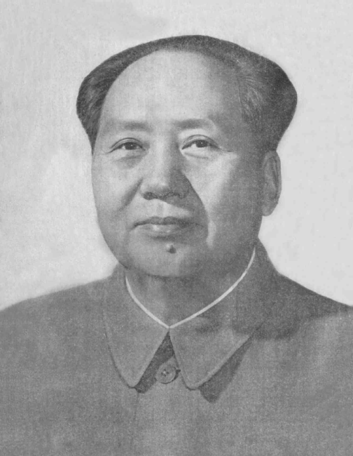
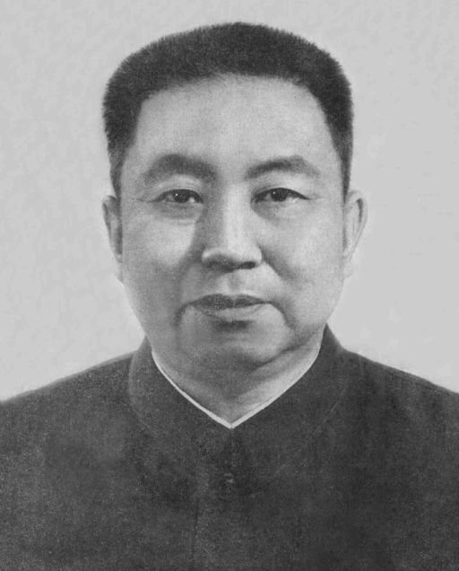
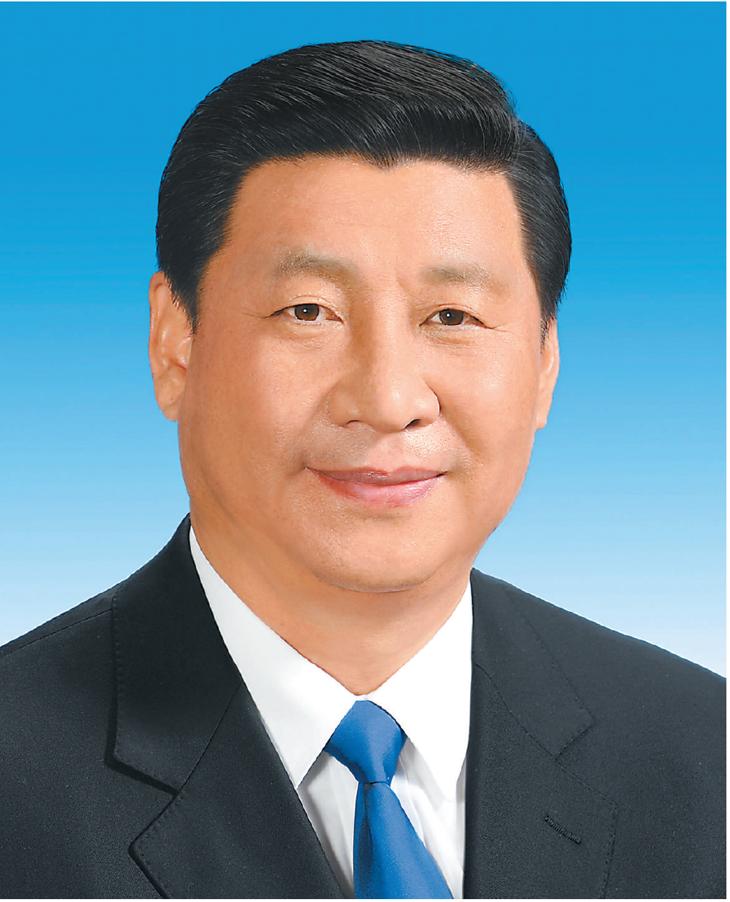

1. Other Paramount Leaders
| Generation (In Office) |
Before 1(1949-1976) | 1.5(1976-1978) Not Officially Recognized, add for consistency |
2(1978-1989) | After 4(2002-2012) | 5(2012-) |
|---|---|---|---|---|---|
| Name | Mao Zedong(1893-1976) | Hua Guofeng(1921-2008) | Deng Xiaoping(1904-1997) | Hu Jintao(1942-) | Xi Jinping(1953-) |
| Standard Figure |
 |  | 
|
 | |
| Songs | To be Determined |